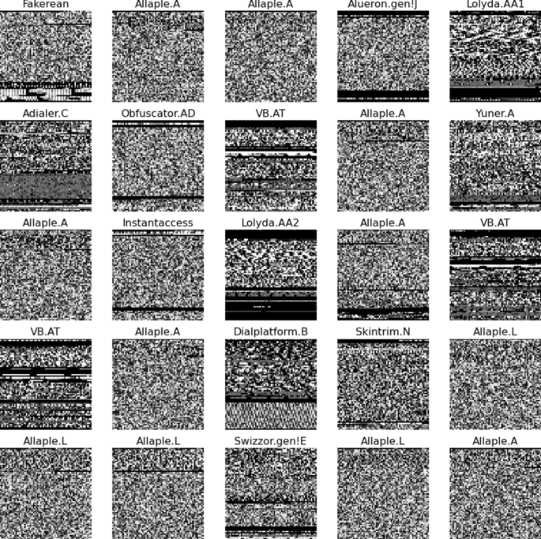

Deep Learning reproduction study classifying malware instances by converting binaries into images and analyzing them with Convolutional Neural Networks.

Malware binaries can be visualized as grayscale images, where differences in code structure reveal distinct visual textures. In this project, we reproduced the methodology from the paper "Using convolutional neural networks for classification of malware represented as images" [1].
The goal was to achieve high classification accuracy on the Malimg dataset by optimizing the CNN architecture using rigorous nested cross-validation to prevent overfitting during hyperparameter tuning.
We explored various architectures, varying the number of convolutional layers, feed-forward layers, and kernel sizes. The best performance was achieved with a 3-layer CNN architecture.
| Conv Layers | Test Accuracy | Test MAE | Std. Dev. |
|---|---|---|---|
| 4 | 97.27% | 0.30 | 0.017 |
| 3 (Best) | 98.62% | 0.07 | 0.004 |
| 2 | 98.52% | 0.07 | 0.009 |
* Results obtained via 10-fold nested cross-validation on the Malimg dataset.
Academic reproduction study focusing on robust model evaluation techniques in Deep Learning. Code structure emphasizes modularity and reproducibility.